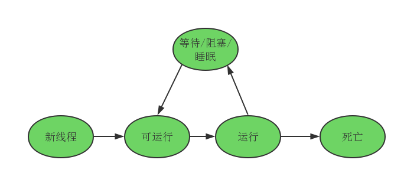

写在前面
多线程，是指从软件或者硬件上实现多个线程并发执行的技术。具有多线程能力的计算机因有硬件支持而能够在同一时间执行多于一个线程，进而提升整体处理性能。具有这种能力的系统包括对称多处理机、多核心处理器以及芯片级多处理或同时多线程处理器。在一个程序中，这些独立运行的程序片段叫作“线程”。
现代编程语言都具有编写多线程程序的能力。就Java而言被大量应用于web后端处理，在处理大量并发访问网站时，多线程技术显得尤为重要。本系列文章将从Java代码及JDK源码介绍的方式全面讲述Java对多线程的支持。
Java如何创建一个线程
Java对于线程的实现具有多种方法。
继承Thread类
Thread类本质是一个实现了Runnable接口的类，通过继承Thread类，复写Thread类的run()方法，调用start()方法启动一个新的线程。
Thread类的定义如下：
1 | public class Thread implements Runnable { |
继承Thread类实现一个新线程：
1 | public class MyThread extends Thread{ |
我们看下Thread的start()方法源码：
1 | public synchronized void start() { |
实现Runnable接口
实现Runnable接口，新建一个线程：
1 | public class MyRunnable implements Runnable { |
实现Runnable接口后需要复写Runnable的run方法，然后将子类作为参数传入Thread的构造方法中，然后调用Thread的start()方法来启动这个线程。
我们可以通过JDK8提供的lambda表达式来简化这个代码。
lambda表达式实现：
1 | public class MyRunnable { |
实现Callable接口
1 | public class MyCallable implements Callable<String> { |
实现Callable接口的方式来实现多线程，首先需要复写Callable的call()方法，然后将子类作为参数传入FutureTask的构造函数，再将FutureTask的实例作为参数传入Thread的构造函数，最后调用Thread方法的start()方法启动新的线程。
实现多线程方式对比
细心的读者可能已经发现了，我们在通过实现Callable方法实现多线程的方式中，在复写call()方法时是可以抛出异常和有返回值的。
通过继承Thread类和实现Runnable接口实现的多线程方式是不能有返回值和抛出异常的，如果你需要在新的线程中抛出异常并且带有返回值的话，你需要通过实现Callable接口的方式来实现多线程。
线程生命周期
在调用start()方法后，线程并不是立马在执行，而是处于可运行状态，等待cpu分配资源才会运行，当线程没有了cpu资源时线程又会处于可运行状态。当处于运行状态的线程被sleep、wait、join等，线程的状态会变为阻塞状态，当阻塞的线程被唤醒时，线程又处于可运行状态等待cup分配资源进而运行，当线程运行完或者因为异常退出时，此时线程处于死亡状态。
线程的生命周期可用图表示：

守护线程
什么是守护线程
在线程启动前，调用Thread的setDaemon(true)方法可将线程设置为守护线程。
thread.setDaemon(true)必须在thread.start()之前设置，否则会跑出一个IllegalThreadStateException异常。你不能把正在运行的常规线程设置为守护线程。
在Daemon线程中产生的新线程也是Daemon的。
只要当前JVM实例中尚存在任何一个非守护线程没有结束，守护线程就全部工作；只有当最后一个非守护线程结束时，守护线程随着JVM一同结束工作。Daemon的作用是为其他线程的运行提供便利服务。JVM在启动时，系统就自动生成了一些守护线程，如GC线程就是个守护线程。
守护线程的用途
在现在分布式系统架构中，很多组件需要和server维持一个心跳连接发送心跳包，这个时候用守护线程来实现这个心跳包的发送最好不过了。
本文首发于我在万达摆地摊's blog，转载请注明来源